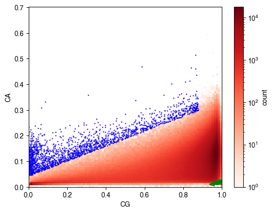
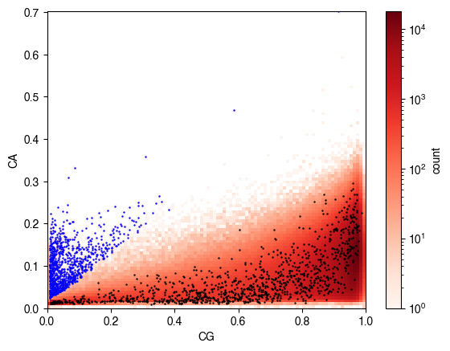
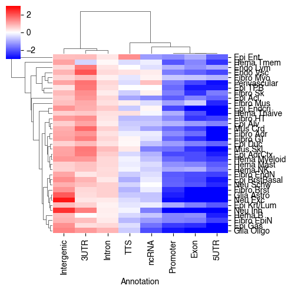
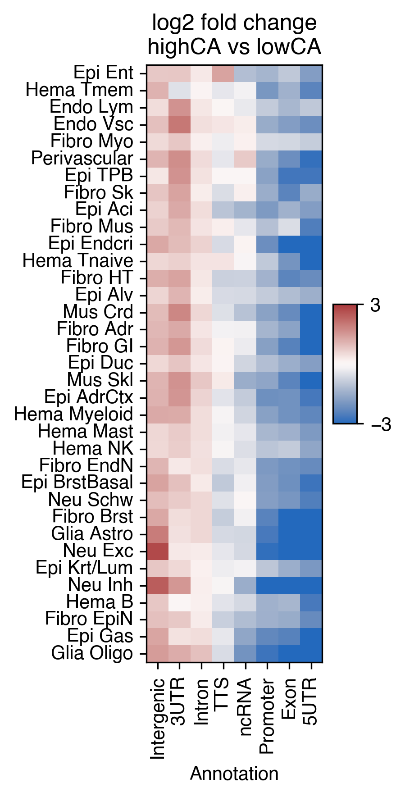
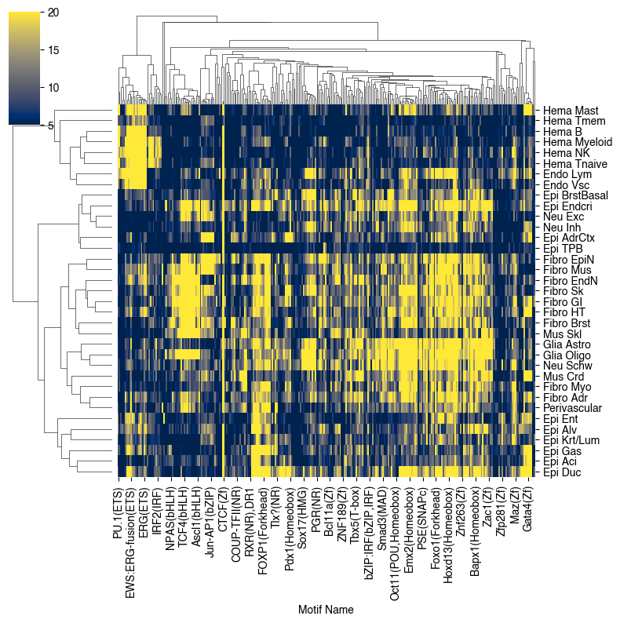
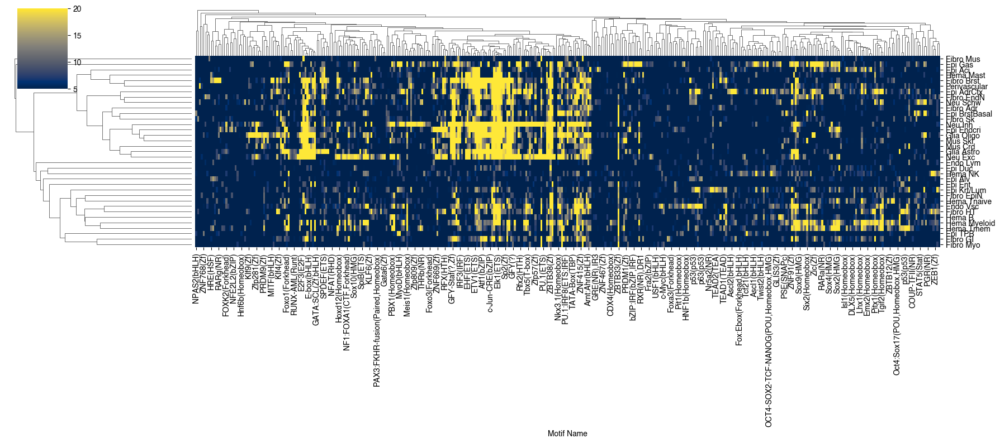
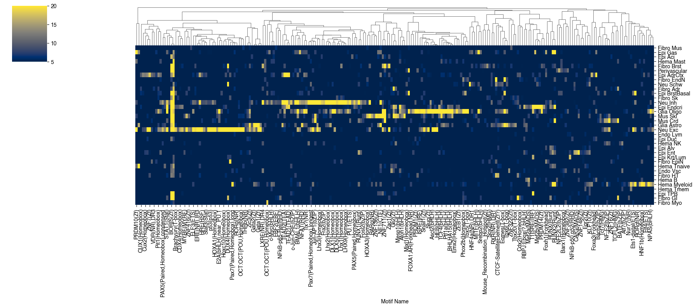
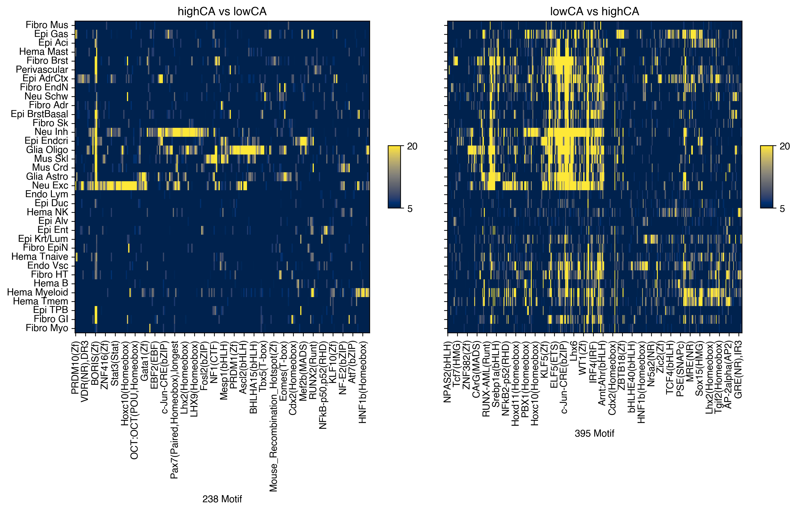
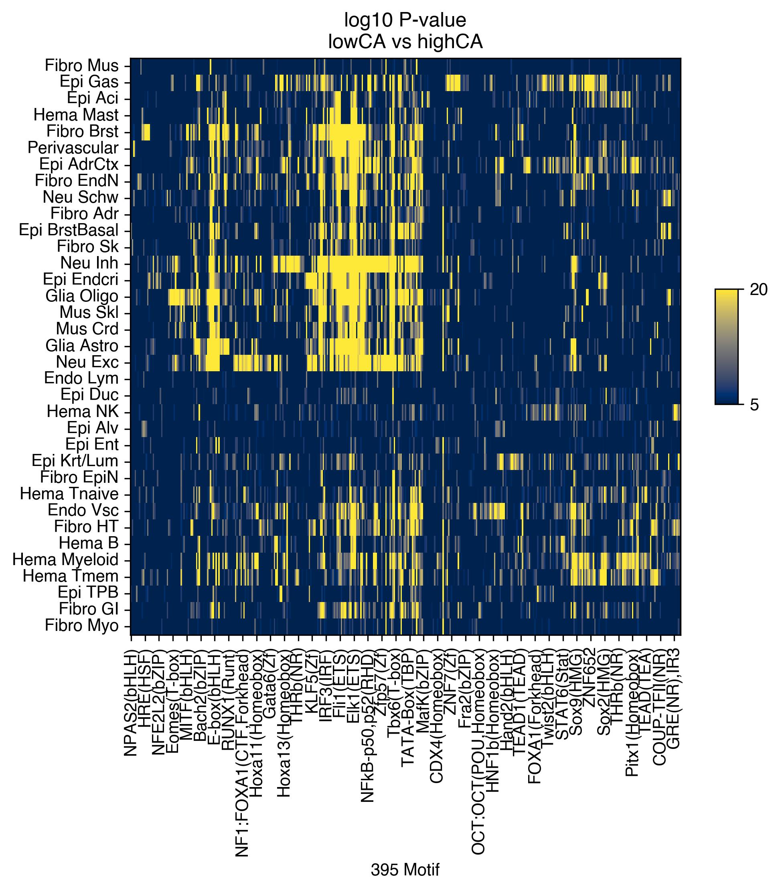

4. MCH mCG corr#
Part of the Fig. 3 chapter — see it for the panel-by-panel map. The first code cell sets ENTEX_ROOT and activates the no-overwrite guard (see the Reproduction guide). Outputs shown are the author’s original run.
# === Reproduction setup — edit ENTEX_ROOT / REF_ROOT for your machine ===
import os, sys
ENTEX_ROOT = os.environ.get('ENTEX_ROOT', '/large_storage/zhoulab/zhoujt/project/ENTEx')
REF_ROOT = os.environ.get('REF_ROOT', '/large_storage/zhoulab/ref')
BOOK_ROOT = os.environ.get('BOOK_ROOT', f'{ENTEX_ROOT}/analysis/HumanCellEpigenomeAtlas')
sys.path.insert(0, BOOK_ROOT)
os.chdir(f'{ENTEX_ROOT}/analysis') # original working directory
import repro_guard # no-overwrite guard (default: skip existing)
import numpy as np
import pandas as pd
from glob import glob
from scipy.sparse import csr_matrix
from scipy.stats import zscore
from concurrent.futures import ProcessPoolExecutor, as_completed
from statsmodels.tsa.stattools import acf
import pysam
import cooler
import anndata
import scanpy as sc
from sklearn.cluster import KMeans
import seaborn as sns
import matplotlib as mpl
import matplotlib.pyplot as plt
import matplotlib.patches as patches
mpl.style.use('default')
mpl.rcParams['pdf.fonttype'] = 42
mpl.rcParams['ps.fonttype'] = 42
mpl.rcParams['font.family'] = 'sans-serif'
mpl.rcParams['font.sans-serif'] = 'Helvetica'
import warnings
warnings.filterwarnings("ignore")
indir = f'{ENTEX_ROOT}/'
outdir = f'{indir}analysis/mCH_mCG_corr/'
# L1_list = np.sort([xx.split('/')[-1].split('.')[0] for xx in glob(f'{indir}merged_allc/L1/CHN/c*.allc.tsv.gz')])
# # L1_list = L1_list[L1_list!='Hema-B']
# L2_list = np.sort([xx.split('/')[-1].split('.')[0] for xx in glob(f'{indir}merged_allc/L2any/*.CGN-Merge.allc.tsv.gz')])
# print(len(L1_list), len(L2_list))
L1_meta = pd.read_csv(f'{indir}L1color.tsv', sep='\t', header=0, index_col=0)
L1_meta = L1_meta.drop(['c35','c36'], axis=0)
L1_annot = L1_meta['L1_abbr'].to_dict()
ct = 'c5'
allc_path = f'{indir}merged_allc/L1/CHN/{ct}.allc.tsv.gz'
res = 1000
def num2str(num):
if num>=1e6:
num_str = f'{int(num/1e6)}M'
elif num>=1e3:
num_str = f'{int(num/1e3)}k'
else:
num_str = f'{num}'
return num_str
import cooler
chrom_size_path = f'{REF_ROOT}/hg38/fasta/hg38.main.chrom.sizes'
chrom_sizes = cooler.read_chromsizes(chrom_size_path, all_names=True)
chrom_sizes = chrom_sizes.iloc[:23]
rm_list = []
for bed_path in [f'{REF_ROOT}/hg38/fasta/hg38.altseq.bed', f'{REF_ROOT}/blacklist/hg38-blacklist.v2.bed.gz']:
bed = pd.read_csv(bed_path, sep='\t', header=None, index_col=None)
bed = {chrom:bed.loc[bed[0]==chrom, [1,2]].values for chrom in chrom_sizes.index}
rm_list.append(bed)
chunks = cooler.util.binnify(chrom_sizes, 10000000)
context_list = pd.Index([f'C{xx}{yy}' for xx in 'ACGT' for yy in 'ACGT'])
def matrixch(allc_path, chrom, start, end):
result_mc = {}
result_cov = {}
npos = (end - start) // res * res
data = []
# with gzip.open(allc_path, 'rt') as allc_lines:
with pysam.TabixFile(allc_path) as allc:
allc_lines = allc.fetch(chrom, start, end)
for line in allc_lines:
_, pos, _, context, mc, cov, *_ = line.split("\t")
data.append([pos, context, mc, cov])
data = pd.DataFrame(data, columns=['pos', 'context', 'mc', 'cov'])
data[['pos', 'mc', 'cov']] = data[['pos', 'mc', 'cov']].astype(int)
posfilter = np.ones(data.shape[0]).astype(bool)
for bed in rm_list:
bedtmp = bed[chrom][np.logical_and(bed[chrom][:,0]<end, bed[chrom][:,1]>start)]
for xx,yy in bedtmp:
posfilter[np.logical_and(data['pos']>=xx, data['pos']<=yy)] = False
data = data.loc[posfilter & ((data['pos']-start) < npos)]
data = data.groupby('context')
for k,context in enumerate(context_list):
if not context in data.groups.keys():
result_mc[context] = np.zeros(npos//res)
result_cov[context] = np.zeros(npos//res)
continue
df = data.get_group(context)
data_mc = csr_matrix((df['mc'], (np.zeros(df.shape[0]), df['pos']-start-1)), shape=[1, npos])
data_cov = csr_matrix((df['cov'], (np.zeros(df.shape[0]), df['pos']-start-1)), shape=[1, npos])
result_mc[context] = data_mc.reshape((-1, res)).sum(axis=1).A1
result_cov[context] = data_cov.reshape((-1, res)).sum(axis=1).A1
return pd.DataFrame(result_mc), pd.DataFrame(result_cov)
cpu = 24
with ProcessPoolExecutor(cpu) as executor:
futures = {}
for i,(chrom,start,end) in enumerate(chunks[['chrom','start','end']].values[:100]):
future = executor.submit(
matrixch,
allc_path=allc_path,
chrom=chrom,
start=int(start),
end=int(end)
)
futures[future] = i
result_mc = {}
result_cov = {}
for future in as_completed(futures):
idx = futures[future]
mc, cov = future.result()
result_mc[idx] = mc
result_cov[idx] = cov
print(f'chunk{idx} finished')
# result_mc = pd.concat([result_mc[i] for i in range(len(chunks))], axis=0, ignore_index=True)
# result_cov = pd.concat([result_cov[i] for i in range(len(chunks))], axis=0, ignore_index=True)
# result_mc.to_hdf(f'mCH_mCG_corr/{ct}_1kb.hdf', key='mc')
# result_cov.to_hdf(f'mCH_mCG_corr/{ct}_1kb.hdf', key='cov')
chunk13 finished
chunk12 finished
chunk14 finished
chunk19 finished
chunk10 finished
chunk7 finished
chunk8 finished
chunk9 finished
chunk18 finished
chunk21 finished
chunk17 finished
chunk16 finished
chunk11 finished
chunk23 finished
chunk15 finished
chunk5 finished
chunk20 finished
chunk22 finished
chunk4 finished
chunk3 finished
chunk0 finished
chunk1 finished
chunk24 finished
chunk2 finished
chunk25 finished
chunk6 finished
chunk26 finished
chunk34 finished
chunk49 finished
chunk33 finished
chunk27 finished
chunk30 finished
chunk36 finished
chunk39 finished
chunk31 finished
chunk32 finished
chunk28 finished
chunk41 finished
chunk35 finished
chunk29 finished
chunk43 finished
chunk44 finished
chunk40 finished
chunk38 finished
chunk42 finished
chunk37 finished
chunk47 finished
chunk45 finished
chunk48 finished
chunk46 finished
chunk50 finished
chunk51 finished
chunk59 finished
chunk60 finished
chunk58 finished
chunk52 finished
chunk69 finished
chunk55 finished
chunk57 finished
chunk67 finished
chunk56 finished
chunk64 finished
chunk63 finished
chunk61 finished
chunk65 finished
chunk54 finished
chunk89 finished
chunk66 finished
chunk71 finished
chunk62 finished
chunk53 finished
chunk68 finished
chunk72 finished
chunk74 finished
chunk73 finished
chunk70 finished
chunk76 finished
chunk75 finished
chunk79 finished
chunk78 finished
chunk77 finished
chunk80 finished
chunk94 finished
chunk83 finished
chunk87 finished
chunk82 finished
chunk81 finished
chunk88 finished
chunk84 finished
chunk92 finished
chunk85 finished
chunk93 finished
chunk90 finished
chunk91 finished
chunk96 finished
chunk86 finished
chunk98 finished
chunk97 finished
chunk99 finished
chunk95 finished
result_mc = pd.concat([result_mc[i] for i in range(100)], axis=0, ignore_index=True)
result_cov = pd.concat([result_cov[i] for i in range(100)], axis=0, ignore_index=True)
print(result_mc.shape, result_cov.shape)
(979658, 16) (979658, 16)
result_mc.sum(axis=0) / result_cov.sum(axis=0)
CAA 0.014926
CAC 0.034271
CAG 0.019499
CAT 0.017042
CCA 0.008992
CCC 0.008366
CCG 0.012329
CCT 0.008814
CGA 0.746513
CGC 0.742676
CGG 0.716546
CGT 0.724528
CTA 0.008922
CTC 0.014172
CTG 0.009599
CTT 0.009283
dtype: float64
context_dict = {'CA': ['CAA', 'CAC', 'CAG', 'CAT', 'CTC'],
'CC': ['CCA', 'CCC', 'CCG', 'CCT'],
'CG': ['CGA', 'CGC', 'CGG', 'CGT'],
'CT': ['CTA', 'CTG', 'CTT']}
context_group = {context: k for k,v in context_dict.items() for context in v}
import numpy as np
def tls_outliers_mad(x, y, z=6.0):
"""
Orthogonal regression (total least squares) + robust threshold on perpendicular distance.
Parameters
----------
x, y : array-like, shape (n,)
z : float
Outlier cutoff in robust-sigma units. 5-8 is a common range; 6 is a good start.
Returns
-------
outlier_idx : 1D int array
Indices (in the original input arrays) flagged as outliers.
dist : 1D float array
Perpendicular distances for valid points (finite x and y), same order as valid_idx.
info : dict
Contains line params and robust stats.
"""
x = np.asarray(x)
y = np.asarray(y)
valid = np.isfinite(x) & np.isfinite(y)
valid_idx = np.flatnonzero(valid)
xv = x[valid]
yv = y[valid]
# --- TLS fit via PCA/SVD on centered data ---
mx, my = xv.mean(), yv.mean()
X = np.column_stack((xv - mx, yv - my)) # (n, 2)
# principal direction (first right-singular vector)
# vt[0] is direction in (x,y); unit length
_, _, vt = np.linalg.svd(X, full_matrices=False)
vx, vy = vt[0]
# line in normal form: n·(p - mu)=0, where n is perpendicular to direction v
# choose unit normal
nx, ny = -vy, vx
# perpendicular distance to TLS line: |n·(p - mu)|
dist = np.abs(nx * (xv - mx) + ny * (yv - my)) # n is unit-length
# --- robust scale & threshold ---
med = np.median(dist)
mad = np.median(np.abs(dist - med))
sigma = 1.4826 * mad # MAD->sigma for normal, robust
if sigma == 0: # degenerate case: almost all points exactly on line
sigma = dist.std() + 1e-12
out_mask = dist > (med + z * sigma)
outlier_idx = valid_idx[out_mask]
info = {
"mu": (mx, my),
"direction": (vx, vy),
"normal": (nx, ny),
"median_dist": float(med),
"mad": float(mad),
"robust_sigma": float(sigma),
"z": float(z),
"n_valid": int(dist.size),
"n_outliers": int(out_mask.sum()),
}
return outlier_idx, dist, info
import numpy as np
import statsmodels.api as sm
def quantile_outliers(x, y, q=0.99, sample=200_000, seed=0):
x = np.asarray(x); y = np.asarray(y)
m = np.isfinite(x) & np.isfinite(y)
x0 = x[m]; y0 = y[m]
rng = np.random.default_rng(seed)
idx = rng.choice(x0.size, size=min(sample, x0.size), replace=False)
Xs = sm.add_constant(x0[idx])
mod = sm.QuantReg(y0[idx], Xs).fit(q=q)
yhat_q = mod.predict(sm.add_constant(x0))
out = y0 > yhat_q
out_idx = np.flatnonzero(m)[out]
return out_idx, mod
import numpy as np
from sklearn.pipeline import make_pipeline
from sklearn.preprocessing import SplineTransformer
from sklearn.linear_model import Ridge
from sklearn.mixture import GaussianMixture
def fit_conditional_outliers_gmm(x, y, spline_df=30, ridge=1.0, subsample=300_000, seed=0):
"""
Returns indices for: high-CA outliers, low-CA outliers, and inliers,
using a heteroscedastic model + GMM on standardized residuals.
No manual thresholds on distance/percentile.
"""
x = np.asarray(x); y = np.asarray(y)
valid = np.isfinite(x) & np.isfinite(y)
xv = x[valid]
yv = y[valid]
orig_idx = np.flatnonzero(valid)
# Subsample for fitting (keeps things fast on 1M+)
rng = np.random.default_rng(seed)
n = xv.size
fit_n = min(subsample, n)
fit_idx = rng.choice(n, size=fit_n, replace=False)
X_fit = xv[fit_idx].reshape(-1, 1)
y_fit = yv[fit_idx]
# 1) mean model mu(x)
mean_model = make_pipeline(
SplineTransformer(n_knots=spline_df, degree=3, include_bias=False),
Ridge(alpha=ridge)
)
mean_model.fit(X_fit, y_fit)
mu = mean_model.predict(xv.reshape(-1, 1))
resid = yv - mu
# 2) variance model sigma(x): fit log(resid^2) ~ spline(x)
# (robust-ish: add epsilon, and clip extremes)
eps = 1e-12
r2 = resid**2 + eps
lr2 = np.log(r2)
var_model = make_pipeline(
SplineTransformer(n_knots=spline_df, degree=3, include_bias=False),
Ridge(alpha=ridge)
)
var_model.fit(X_fit, lr2[fit_idx])
log_sigma2 = var_model.predict(xv.reshape(-1, 1))
sigma = np.sqrt(np.exp(log_sigma2))
sigma = np.maximum(sigma, np.median(sigma) * 1e-3) # avoid pathological tiny sigma
# 3) standardized residual
z = (resid / sigma).reshape(-1, 1)
# 4) GMM on z (3 components: inlier, high, low)
gmm = GaussianMixture(n_components=3, random_state=seed)
gmm.fit(z[fit_idx])
labels = gmm.predict(z)
means = gmm.means_.ravel()
inlier_comp = np.argmin(np.abs(means)) # closest to 0
high_comp = np.argmax(means) # positive outliers
low_comp = np.argmin(means) # negative outliers
high_idx = orig_idx[labels == high_comp]
low_idx = orig_idx[labels == low_comp]
inl_idx = orig_idx[labels == inlier_comp]
info = {
"component_means_z": means,
"inlier_comp": int(inlier_comp),
"high_comp": int(high_comp),
"low_comp": int(low_comp),
"weights": gmm.weights_.ravel(),
}
return high_idx, low_idx, inl_idx, info
import numpy as np
from sklearn.mixture import GaussianMixture
def bh_fdr(p, q=0.01):
"""Return boolean mask of discoveries using Benjamini–Hochberg at FDR q."""
p = np.asarray(p)
m = p.size
order = np.argsort(p)
p_sorted = p[order]
thresh = q * (np.arange(1, m + 1) / m)
ok = p_sorted <= thresh
if not np.any(ok):
return np.zeros_like(p, dtype=bool)
k = np.max(np.where(ok)[0])
cutoff = p_sorted[k]
return p <= cutoff
def conditional_tail_outliers(x, y, nbins=400, min_bin=200, q=0.01, seed=0):
"""
CG-aware outliers:
- lowCG_highCA: CA unusually high given CG and CG in low mode
- highCG_lowCA: CA unusually low given CG and CG in high mode
Uses:
- data-driven low/high CG split via 2-component GMM on CG
- empirical conditional CDF within CG bins
- BH-FDR to call significant tail events (statistical control)
"""
x = np.asarray(x); y = np.asarray(y)
m = np.isfinite(x) & np.isfinite(y)
x = x[m]; y = y[m]
orig_idx = np.flatnonzero(m)
n = x.size
# --- data-driven split of CG into low/high regimes ---
g = GaussianMixture(n_components=2, random_state=seed)
g.fit(x.reshape(-1, 1))
comp = g.predict(x.reshape(-1, 1))
means = g.means_.ravel()
low_comp = np.argmin(means)
high_comp = np.argmax(means)
is_lowCG = comp == low_comp
is_highCG = comp == high_comp
# --- bin CG ---
edges = np.linspace(x.min(), x.max(), nbins + 1)
b = np.searchsorted(edges, x, side="right") - 1
b = np.clip(b, 0, nbins - 1)
# sort by bin for grouped processing
order = np.argsort(b)
b_s, y_s = b[order], y[order]
starts = np.r_[0, np.flatnonzero(np.diff(b_s)) + 1]
ends = np.r_[starts[1:], n]
# We'll compute p_high and p_low for each point (in sorted order)
p_high = np.full(n, np.nan)
p_low = np.full(n, np.nan)
# For each bin: compute empirical CDF efficiently using ranks
for s, e in zip(starts, ends):
if e - s < min_bin:
continue
ys = y_s[s:e]
# ranks: for each y, how many <= y?
# Use sorting once per bin
ys_sorted = np.sort(ys)
# F(y) = #(<=y)/m
r = np.searchsorted(ys_sorted, ys, side="right")
F = r / (e - s)
p_low[order[s:e]] = F
p_high[order[s:e]] = 1.0 - F
# drop points from tiny bins (nan p-values)
ok = np.isfinite(p_high) & np.isfinite(p_low)
x2, y2 = x[ok], y[ok]
idx2 = orig_idx[ok]
is_lowCG2 = is_lowCG[ok]
is_highCG2 = is_highCG[ok]
p_high2 = p_high[ok]
p_low2 = p_low[ok]
# --- apply BH-FDR within each hypothesis family ---
# lowCG/highCA -> upper-tail in lowCG mode
selA = is_lowCG2
discA = np.zeros_like(selA, dtype=bool)
if np.any(selA):
discA[selA] = bh_fdr(p_high2[selA], q=q)
# highCG/lowCA -> lower-tail in highCG mode
selB = is_highCG2
discB = np.zeros_like(selB, dtype=bool)
if np.any(selB):
discB[selB] = bh_fdr(p_low2[selB], q=q)
return {
"lowCG_highCA": idx2[discA],
"highCG_lowCA": idx2[discB],
"meta": {
"nbins": nbins, "min_bin": min_bin, "fdr_q": q,
"cg_means": means,
"n_used": int(idx2.size),
"n_lowCG_highCA": int(discA.sum()),
"n_highCG_lowCA": int(discB.sum()),
}
}
import numpy as np
def robust_bin_outliers(x, y, nbins=400, min_bin=200, k_clip=6.0, z=6.0, n_iter=2):
x = np.asarray(x); y = np.asarray(y)
m = np.isfinite(x) & np.isfinite(y)
x = x[m]; y = y[m]
orig_idx = np.flatnonzero(m)
edges = np.linspace(x.min(), x.max(), nbins + 1)
b = np.searchsorted(edges, x, side="right") - 1
b = np.clip(b, 0, nbins - 1)
order = np.argsort(b)
b_s, y_s = b[order], y[order]
starts = np.r_[0, np.flatnonzero(np.diff(b_s)) + 1]
ends = np.r_[starts[1:], y_s.size]
out = np.zeros(y_s.size, dtype=bool)
for s, e in zip(starts, ends):
if e - s < min_bin:
continue
ys = y_s[s:e].copy()
# iterative robust fit
for _ in range(n_iter):
med = np.median(ys)
mad = np.median(np.abs(ys - med))
sigma = 1.4826 * mad
if sigma <= 0:
break
lo = med - k_clip * sigma
hi = med + k_clip * sigma
ys = np.clip(ys, lo, hi)
# final score on original (unclipped) values
med = np.median(ys)
mad = np.median(np.abs(ys - med))
sigma = 1.4826 * mad
if sigma <= 0:
continue
out[s:e] = np.abs(y_s[s:e] - med) > (z * sigma)
out_idx = orig_idx[order[out]]
return out_idx, edges
import numpy as np
import statsmodels.api as sm
from patsy import dmatrix
from sklearn.mixture import GaussianMixture
def split_low_high_cg(x, seed=0):
x = np.asarray(x)
g = GaussianMixture(n_components=2, random_state=seed).fit(x.reshape(-1, 1))
comp = g.predict(x.reshape(-1, 1))
means = g.means_.ravel()
low_comp = np.argmin(means)
high_comp = np.argmax(means)
return (comp == low_comp), (comp == high_comp), {"cg_means": means, "cg_weights": g.weights_}
def quantreg_spline_outliers(x, y, q_low=0.01, q_high=0.99,
df_spline=10, subsample=300_000, seed=0,
grid_size=500):
x = np.asarray(x); y = np.asarray(y)
m = np.isfinite(x) & np.isfinite(y)
xv = x[m]; yv = y[m]
orig_idx = np.flatnonzero(m)
# low/high CG modes (data-driven)
is_lowCG, is_highCG, cg_info = split_low_high_cg(xv, seed=seed)
# subsample for fitting
rng = np.random.default_rng(seed)
n = xv.size
fit_n = min(subsample, n)
fit_idx = rng.choice(n, size=fit_n, replace=False)
x_fit = xv[fit_idx]
y_fit = yv[fit_idx]
# spline design matrix via patsy (natural cubic regression spline)
# You can increase df_spline if curvature is strong.
X_fit = dmatrix(f"cr(x, df={df_spline})", {"x": x_fit}, return_type="dataframe")
X_all = dmatrix(f"cr(x, df={df_spline})", {"x": xv}, return_type="dataframe")
# fit quantile regressions
mod_low = sm.QuantReg(y_fit, X_fit).fit(q=q_low)
mod_high = sm.QuantReg(y_fit, X_fit).fit(q=q_high)
ql = np.asarray(mod_low.predict(X_all))
qh = np.asarray(mod_high.predict(X_all))
# classify corners (no percentile choice; using model quantiles)
lowCG_highCA = is_lowCG & (yv > qh)
highCG_lowCA = is_highCG & (yv < ql)
# envelope for plotting on a grid
xg = np.linspace(xv.min(), xv.max(), grid_size)
Xg = dmatrix(f"cr(x, df={df_spline})", {"x": xg}, return_type="dataframe")
ql_g = np.asarray(mod_low.predict(Xg))
qh_g = np.asarray(mod_high.predict(Xg))
return {
"lowCG_highCA": orig_idx[lowCG_highCA],
"highCG_lowCA": orig_idx[highCG_lowCA],
"envelope": {"x_grid": xg, "q_low": ql_g, "q_high": qh_g},
"models": {"low": mod_low, "high": mod_high},
"meta": {"q_low": q_low, "q_high": q_high, "df_spline": df_spline, **cg_info}
}
import numpy as np
from scipy.ndimage import gaussian_filter1d
def robust_binned_outliers(x, y, nbins=400, min_bin=200,
k_trim=6.0, # trim using median ± k*MAD within bin
z_env=3.0, # envelope width in sigma units after trimming
smooth_sigma_bins=2.0,
seed=0):
x = np.asarray(x); y = np.asarray(y)
m = np.isfinite(x) & np.isfinite(y)
xv = x[m]; yv = y[m]
orig_idx = np.flatnonzero(m)
# low/high CG modes (data-driven)
is_lowCG, is_highCG, cg_info = split_low_high_cg(xv, seed=seed)
# bin CG
edges = np.linspace(xv.min(), xv.max(), nbins + 1)
centers = 0.5 * (edges[:-1] + edges[1:])
b = np.searchsorted(edges, xv, side="right") - 1
b = np.clip(b, 0, nbins - 1)
# arrays for per-bin envelope
q_low_bin = np.full(nbins, np.nan)
q_high_bin = np.full(nbins, np.nan)
counts = np.bincount(b, minlength=nbins)
# compute robust envelope per bin
for bi in range(nbins):
if counts[bi] < min_bin:
continue
ys = yv[b == bi]
med = np.median(ys)
mad = np.median(np.abs(ys - med))
sigma = 1.4826 * mad
if sigma <= 0:
continue
# trim presumed outliers to avoid masking
keep = (ys >= med - k_trim * sigma) & (ys <= med + k_trim * sigma)
ys2 = ys[keep]
if ys2.size < min_bin:
continue
med2 = np.median(ys2)
mad2 = np.median(np.abs(ys2 - med2))
sigma2 = 1.4826 * mad2
if sigma2 <= 0:
continue
q_low_bin[bi] = med2 - z_env * sigma2
q_high_bin[bi] = med2 + z_env * sigma2
# fill missing bins by interpolation (then smooth)
good = np.isfinite(q_low_bin) & np.isfinite(q_high_bin)
if good.sum() >= 5:
q_low_bin = np.interp(np.arange(nbins), np.flatnonzero(good), q_low_bin[good])
q_high_bin = np.interp(np.arange(nbins), np.flatnonzero(good), q_high_bin[good])
if smooth_sigma_bins and smooth_sigma_bins > 0:
q_low_bin = gaussian_filter1d(q_low_bin, sigma=smooth_sigma_bins, mode="nearest")
q_high_bin = gaussian_filter1d(q_high_bin, sigma=smooth_sigma_bins, mode="nearest")
# assign envelope per point by its bin
ql = q_low_bin[b]
qh = q_high_bin[b]
lowCG_highCA = is_lowCG & (yv > qh)
highCG_lowCA = is_highCG & (yv < ql)
return {
"lowCG_highCA": orig_idx[lowCG_highCA],
"highCG_lowCA": orig_idx[highCG_lowCA],
"envelope": {"x_grid": centers, "q_low": q_low_bin, "q_high": q_high_bin, "bin_edges": edges},
"meta": {"nbins": nbins, "min_bin": min_bin, "k_trim": k_trim, "z_env": z_env,
"smooth_sigma_bins": smooth_sigma_bins, **cg_info}
}
import numpy as np
def robust_bin_outliers_signed(x, y, nbins=400, min_bin=200, k_clip=10.0, z=10.0, n_iter=2):
x = np.asarray(x); y = np.asarray(y)
m = np.isfinite(x) & np.isfinite(y)
xv = x[m]; yv = y[m]
orig_idx = np.flatnonzero(m)
edges = np.linspace(xv.min(), xv.max(), nbins + 1)
b = np.searchsorted(edges, xv, side="right") - 1
b = np.clip(b, 0, nbins - 1)
order = np.argsort(b)
b_s, y_s = b[order], yv[order]
starts = np.r_[0, np.flatnonzero(np.diff(b_s)) + 1]
ends = np.r_[starts[1:], y_s.size]
z_rob = np.full(y_s.size, np.nan)
hi = np.zeros(y_s.size, dtype=bool)
lo = np.zeros(y_s.size, dtype=bool)
for s, e in zip(starts, ends):
if e - s < min_bin:
continue
ys = y_s[s:e].copy()
# iterative robust fit with winsorization
for _ in range(n_iter):
med = np.median(ys)
mad = np.median(np.abs(ys - med))
sigma = 1.4826 * mad
if sigma <= 0:
break
ys = np.clip(ys, med - k_clip * sigma, med + k_clip * sigma)
med = np.median(ys)
mad = np.median(np.abs(ys - med))
sigma = 1.4826 * mad
if sigma <= 0:
continue
zr = (y_s[s:e] - med) / sigma
z_rob[s:e] = zr
hi[s:e] = zr > z
lo[s:e] = zr < -z
# map back to original indexing
idx_sorted = orig_idx[order]
return {
"high_outliers": idx_sorted[hi], # unusually high CA given CG bin
"low_outliers": idx_sorted[lo], # unusually low CA given CG bin
"z_robust_sorted": z_rob, # aligned with idx_sorted
"idx_sorted": idx_sorted,
"bin_edges": edges,
}
from scipy.stats import rankdata
for ct in L1_meta.index:
# mc = pd.read_hdf(f'{outdir}{ct}_1kb.hdf', key='mc')
# cov = pd.read_hdf(f'{outdir}{ct}_1kb.hdf', key='cov')
# bed = cooler.util.binnify(chrom_sizes, res)
# bed = bed.loc[bed['end']-bed['start']==res].reset_index(drop=True)
# bed['name'] = bed['chrom'].astype(str) + '-' + (bed['start']//res).astype(str)
# mc = mc.groupby(context_group, axis=1).sum()
# cov = cov.groupby(context_group, axis=1).sum()
# binfilter = ((cov>10).sum(axis=1)==4)
# # print(binfilter.sum(), binfilter.shape[0])
# mc = mc.loc[binfilter]
# cov = cov.loc[binfilter]
# bed = bed.loc[binfilter]
# ratio = mc / cov
# thres = np.percentile(ratio['CG'], 2)
# ratiotmp = ratio.loc[ratio['CG']<thres]
# rank = rankdata(ratiotmp['CA'])
# bed.loc[ratiotmp.index].loc[rank<2000].sort_values(['chrom','start']).to_csv(f'{outdir}{ct}_lowCA_lowCG.bed', sep='\t', header=False, index=False)
# bed.loc[ratiotmp.index].loc[rank>(len(rank)-2000)].sort_values(['chrom','start']).to_csv(f'{outdir}{ct}_highCA_lowCG.bed', sep='\t', header=False, index=False)
print(ct, thres)
cmd = f'bedtools intersect -wa -a {REF_ROOT}/hg38/gencode/v30/gencode.v30.annotation.gene.sorted.bed.gz -b {outdir}{ct}_highCA_lowCG.bed | cut -f5 | sort | uniq > {outdir}{ct}_highCA_lowCG.genebody.txt'
os.system(cmd)
cmd = f'bedtools intersect -wa -a {REF_ROOT}/hg38/gencode/v30/gencode.v30.annotation.gene.sorted.bed.gz -b {outdir}{ct}_lowCA_lowCG.bed | cut -f5 | sort | uniq > {outdir}{ct}_lowCA_lowCG.genebody.txt'
os.system(cmd)
c33 0.2314414565632291
c3 0.2314414565632291
c22 0.2314414565632291
c9 0.2314414565632291
c20 0.2314414565632291
c25 0.2314414565632291
c30 0.2314414565632291
c13 0.2314414565632291
c8 0.2314414565632291
c4 0.2314414565632291
c18 0.2314414565632291
c2 0.2314414565632291
c29 0.2314414565632291
c17 0.2314414565632291
c19 0.2314414565632291
c28 0.2314414565632291
c6 0.2314414565632291
c11 0.2314414565632291
c32 0.2314414565632291
c34 0.2314414565632291
c23 0.2314414565632291
c31 0.2314414565632291
c14 0.2314414565632291
c7 0.2314414565632291
c24 0.2314414565632291
c0 0.2314414565632291
c27 0.2314414565632291
c1 0.2314414565632291
c15 0.2314414565632291
c26 0.2314414565632291
c5 0.2314414565632291
c10 0.2314414565632291
c16 0.2314414565632291
c21 0.2314414565632291
c12 0.2314414565632291
ct = 'c10'
mc = pd.read_hdf(f'{outdir}{ct}_1kb.hdf', key='mc').groupby(context_group, axis=1).sum()
cov = pd.read_hdf(f'{outdir}{ct}_1kb.hdf', key='cov').groupby(context_group, axis=1).sum()
binfilter = ((cov>10).sum(axis=1)==4)
print(binfilter.sum(), binfilter.shape[0])
ratio = mc / cov
ratio = ratio.loc[binfilter]
2703887 3031030
ratio.corr()
| CA | CC | CG | CT | |
|---|---|---|---|---|
| CA | 1.000000 | 0.622065 | 0.444676 | 0.837561 |
| CC | 0.622065 | 1.000000 | 0.257169 | 0.651157 |
| CG | 0.444676 | 0.257169 | 1.000000 | 0.335054 |
| CT | 0.837561 | 0.651157 | 0.335054 | 1.000000 |
# imprint_bed = pd.read_csv(f'{outdir}ICR.bed', header=None, sep='\t', index_col=None, names=['chrom','start','end'])
# imprint_bed.index = imprint_bed['chrom'] + '-' + ((imprint_bed['start']+imprint_bed['end'])//2//res).astype(str)
np.percentile(ratio, [0.1,99.9], axis=0)
array([[0.00854097, 0.00409757, 0.01058168, 0.00446798],
[0.08029934, 0.02533878, 0.98534799, 0.02350216]])
from scipy.stats import rankdata
def norm(s):
lo, hi = s.quantile([0.001, 0.999])
s_norm = (s.clip(lo, hi) - lo) / (hi - lo)
return s_norm
idx = np.arange(ratio.shape[0])
xx = ratio['CA'].clip
order = rankdata(norm(ratio['CA']) + norm(-ratio['CG']))
result = {'low_outliers': idx[order<2000],
'high_outliers': idx[order>(len(ratio)-2000)]}
# out_idx, edges = robust_bin_outliers(ratio['CG'], ratio['CA'])
# out_idx, mod = quantile_outliers(ratio['CG'], ratio['CA'])
result = robust_bin_outliers_signed(ratio['CG'], ratio['CA'])
# print(len(out_idx))
# print(len(result['lowCG_highCA']), len(result['highCG_lowCA']))
print(len(result['high_outliers']), len(result['low_outliers']))
986 0
out_idx = bed.reset_index().index[bed['name'].isin(imprint_bed.index)]
print(len(out_idx))
1077
from matplotlib.colors import LogNorm
x = ratio["CG"].to_numpy()
y = ratio["CA"].to_numpy()
# 2D histogram
H, xedges, yedges = np.histogram2d(x, y, bins=100)
fig, ax = plt.subplots()
m = ax.pcolormesh(
xedges, yedges, H.T,
cmap='Reds',
norm=LogNorm(vmin=1), # log color scale
shading="auto"
)
idx_high = result['high_outliers']
ax.scatter(
x[idx_high], y[idx_high],
s=0.5, c='b', label='lowCG_highCA'
)
idx_low = result['low_outliers']
ax.scatter(
x[idx_low], y[idx_low],
s=0.5, c='g', label='highCG_lowCA'
)
# ax.scatter(
# x[out_idx], y[out_idx],
# s=0.5, c='k', label='outliers'
# )
fig.colorbar(m, ax=ax, label="count")
ax.set_xlabel("CG")
ax.set_ylabel("CA")
Text(0, 0.5, 'CA')

from matplotlib.colors import LogNorm
x = ratio["CG"].to_numpy()
y = ratio["CA"].to_numpy()
# 2D histogram
H, xedges, yedges = np.histogram2d(x, y, bins=100)
fig, ax = plt.subplots()
m = ax.pcolormesh(
xedges, yedges, H.T,
cmap='Reds',
norm=LogNorm(vmin=1), # log color scale
shading="auto"
)
idx_high = result['high_outliers']
ax.scatter(
x[idx_high], y[idx_high],
s=0.5, c='b', label='lowCG_highCA'
)
idx_low = result['low_outliers']
ax.scatter(
x[idx_low], y[idx_low],
s=0.5, c='g', label='highCG_lowCA'
)
ax.scatter(
x[out_idx], y[out_idx],
s=0.5, c='k', label='outliers'
)
fig.colorbar(m, ax=ax, label="count")
ax.set_xlabel("CG")
ax.set_ylabel("CA")
Text(0, 0.5, 'CA')

bed
| chrom | start | end | name | |
|---|---|---|---|---|
| 792 | chr1 | 792000 | 793000 | chr1-792 |
| 793 | chr1 | 793000 | 794000 | chr1-793 |
| 794 | chr1 | 794000 | 795000 | chr1-794 |
| 795 | chr1 | 795000 | 796000 | chr1-795 |
| 796 | chr1 | 796000 | 797000 | chr1-796 |
| ... | ... | ... | ... | ... |
| 2874954 | chr22 | 50782000 | 50783000 | chr22-50782 |
| 2874955 | chr22 | 50783000 | 50784000 | chr22-50783 |
| 2874956 | chr22 | 50784000 | 50785000 | chr22-50784 |
| 2874957 | chr22 | 50785000 | 50786000 | chr22-50785 |
| 2874958 | chr22 | 50786000 | 50787000 | chr22-50786 |
2563582 rows × 4 columns
global_cg = mc['CG'].sum() / cov['CG'].sum()
bed.loc[(ratio['CG']<0.2) & (bed.index.isin(bed.index[result['high_outliers']]))].sort_values(['chrom','start']).to_csv(f'{outdir}{ct}_highCA_lowCG.bed', sep='\t', header=False, index=False)
# bed.loc[(ratio['CG']>global_cg) & (bed.index.isin(bed.index[result['high_outliers']]))].sort_values(['chrom','start']).to_csv(f'{outdir}{ct}_highCA_highCG.bed', sep='\t', header=False, index=False)
import os
ct = 'c10'
cmd = f'bedtools intersect -wa -a {REF_ROOT}/hg38/gencode/v30/gencode.v30.annotation.gene.sorted.bed.gz -b {outdir}{ct}_highCA_lowCG.bed | cut -f4 | cut -d. -f1 | sort | uniq > {outdir}{ct}_highCA_lowCG.genebody.txt'
os.system(cmd)
0
result = {}
for ct in L1_meta.index:
stats_high = pd.read_csv(f'{outdir}{ct}_highCA_lowCG.stats.txt', sep='\t', header=0, index_col=0, nrows=13)
stats_low = pd.read_csv(f'{outdir}{ct}_lowCA_lowCG.stats.txt', sep='\t', header=0, index_col=0, nrows=13)
tmp = pd.DataFrame([stats_high['Number of peaks'], stats_low['Number of peaks']], index=['highCA_lowCG', 'lowCA_lowCG']).T
tmp = tmp / tmp.sum(axis=0)
result[ct] = np.log2(tmp['highCA_lowCG']/tmp['lowCA_lowCG'])
result = pd.DataFrame(result).fillna(0)
result = result.loc[result.std(axis=1)>0].T
cg = sns.clustermap(result, cmap='bwr', vmin=-3, vmax=3, metric='cosine', yticklabels=result.index.map(L1_annot), figsize=(5,5))
rorder = cg.dendrogram_row.reordered_ind
corder = cg.dendrogram_col.reordered_ind

fig, ax = plt.subplots(figsize=(3,6), dpi=300)
sns.heatmap(result.iloc[rorder, corder],
yticklabels=result.index.map(L1_annot)[rorder],
cmap='vlag', ax=ax, vmin=-3, vmax=3,
cbar_kws={"shrink": 0.2, "aspect": 5, "ticks": [-3, 3]})
sns.despine(ax=ax, top=False, right=False, left=False, bottom=False)
# ax.set_yticklabels(ax.get_yticklabels(), rotation=0)
ax.set_title('log2 fold change\nhighCA vs lowCA')
cbar = ax.collections[0].colorbar
cbar.ax.spines['outline'].set_linewidth(0.8)
fig.tight_layout()
fig.savefig(f'mCH_mCG_corr/highCA_lowCG_lowCA_lowCG_annot_fc.pdf', transparent=True)

result = {}
for ct in L1_meta.index:
tmp = pd.read_csv(f'{outdir}{ct}_highCA_lowCG/knownResults.txt', sep='\t', header=0, index_col=0)
# low_cg = pd.read_csv(f'{outdir}{ct}_lowCA_lowCG_vs_highCA_lowCG/knownResults.txt', sep='\t', header=0, index_col=0)
result[ct] = -tmp.loc[~tmp.index.duplicated(), 'Log P-value']
result = pd.DataFrame(result).fillna(0)
result = result.loc[(result>5).sum(axis=1)>10].T
result.columns = result.columns.str.split('/').str[0]
cg = sns.clustermap(result, vmin=5, vmax=20, cmap='cividis', metric='cosine', figsize=(8,8),
# xticklabels=result.columns.str.split('/').str[0],
yticklabels=result.index.map(L1_annot))
rorder = cg.dendrogram_row.reordered_ind
corder = cg.dendrogram_col.reordered_ind

result = {}
for ct in L1_meta.index:
tmp = pd.read_csv(f'{outdir}{ct}_lowCA_lowCG_vs_highCA_lowCG/knownResults.txt', sep='\t', header=0, index_col=0)
result[ct] = -tmp.loc[~tmp.index.duplicated(), 'Log P-value']
result = pd.DataFrame(result).fillna(0)
result = result.loc[(result>5).sum(axis=1)>2].T
result.columns = result.columns.str.split('/').str[0]
cg = sns.clustermap(result, vmin=5, vmax=20, cmap='cividis', metric='cosine', figsize=(18,8),
xticklabels=4,
yticklabels=result.index.map(L1_annot))
rorder = cg.dendrogram_row.reordered_ind
corder = cg.dendrogram_col.reordered_ind
result_hypo = result.iloc[rorder, corder]

result = {}
for ct in L1_meta.index:
tmp = pd.read_csv(f'{outdir}{ct}_highCA_lowCG_vs_lowCA_lowCG/knownResults.txt', sep='\t', header=0, index_col=0)
# low_cg = pd.read_csv(f'{outdir}{ct}_lowCA_lowCG_vs_highCA_lowCG/knownResults.txt', sep='\t', header=0, index_col=0)
result[ct] = -tmp.loc[~tmp.index.duplicated(), 'Log P-value']
result = pd.DataFrame(result).fillna(0)
result = result.loc[(result>5).sum(axis=1)>2].T
result.columns = result.columns.str.split('/').str[0]
(result.loc[:, result.columns.str.contains('CTCF|BORIS')]>5).max(axis=1).sum(axis=0)
28
cg = sns.clustermap(result.loc[result_hypo.index],
vmin=5, vmax=20, cmap='cividis', metric='cosine',
row_cluster=False, figsize=(18,8),
xticklabels=2, yticklabels=result_hypo.index.map(L1_annot))
# rorder = cg.dendrogram_row.reordered_ind
corder = cg.dendrogram_col.reordered_ind
result_hyper = result.iloc[rorder, corder]

vmin, vmax = 5, 20
fig, axes = plt.subplots(1, 2, figsize=(12,7.5), sharey='all', dpi=300)
for i, result in enumerate([result_hyper, result_hypo]):
ax = axes[i]
sns.heatmap(result,
yticklabels=result.index.map(L1_annot), xticklabels=result.shape[1]//29,
rasterized=True, cmap='cividis', ax=ax, vmin=vmin, vmax=vmax,
cbar_kws={"shrink": 0.2, "aspect": 5, "ticks": [vmin, vmax]})
sns.despine(ax=ax, top=False, right=False, left=False, bottom=False)
# ax.set_yticklabels(ax.get_yticklabels(), rotation=0)
ax.set_xlabel(f'{result.shape[1]} Motif')
ax.set_title(['highCA vs lowCA', 'lowCA vs highCA'][i])
cbar = ax.collections[0].colorbar
cbar.ax.spines['outline'].set_linewidth(0.8)
fig.tight_layout()
fig.savefig(f'mCH_mCG_corr/lowCG_highCA_vs_lowCA_motif_pvalue.pdf', transparent=True)

vmin, vmax = 5, 20
fig, ax = plt.subplots(figsize=(7,7.5), dpi=300)
sns.heatmap(result.iloc[rorder, corder],
yticklabels=result.index.map(L1_annot)[rorder], xticklabels=10,
rasterized=True, cmap='cividis', ax=ax, vmin=vmin, vmax=vmax,
cbar_kws={"shrink": 0.2, "aspect": 5, "ticks": [vmin, vmax]})
sns.despine(ax=ax, top=False, right=False, left=False, bottom=False)
ax.set_xlabel(f'{result.shape[1]} Motif')
# ax.set_yticklabels(ax.get_yticklabels(), rotation=0)
ax.set_title('log10 P-value\nlowCA vs highCA')
cbar = ax.collections[0].colorbar
cbar.ax.spines['outline'].set_linewidth(0.8)
fig.tight_layout()
fig.savefig(f'mCH_mCG_corr/lowCA_lowCG_highCA_lowCG_motif_pvalue.pdf', transparent=True)
